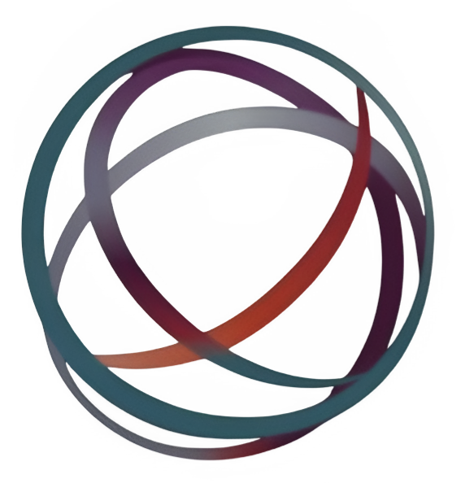
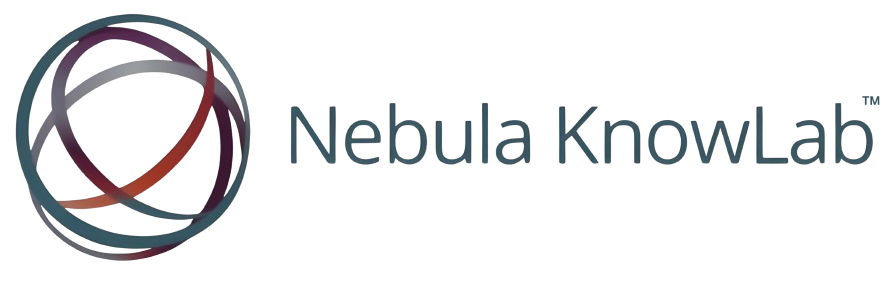
AI models are trained systems that learn patterns from large amounts of data.
Context: AI models form the foundational layer. They are trained on vast datasets to recognize patterns, serving as the 'brain' before agency is introduced.
Examples: GPT · Gemini · Claude · Llama
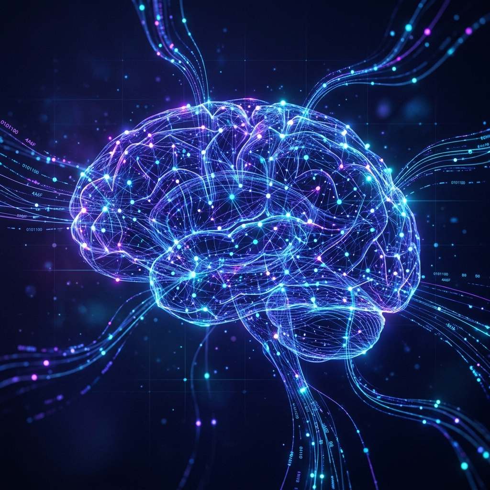
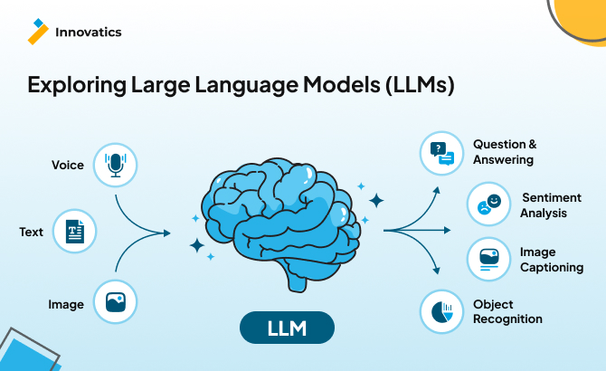
LLM = Large Language Model
Advanced AI models trained on internet-scale text datasets to understand, analyze, and generate human-like language using deep neural networks (Transformers).
How they work: They process input text and calculate the most probable next word (token) in a sequence, allowing them to form coherent thoughts, reason through complex problems, and simulate deep understanding.
Popular LLMs: GPT-4o · Claude 3.5 · Gemini 1.5 · DeepSeek-V3 · Llama 3
LLMs mainly act as chatbots. They respond to prompts but cannot independently execute long-running, multi-step workflows or manage tools without an external orchestrator.
AI Agents are intelligent systems that can understand goals, make decisions, use tools, and execute tasks autonomously.
The Agent Paradigm: By combining an LLM with memory, reasoning loops, and tool access, agents break free from the chatbox to perform real-world tasks.
Examples: Autonomous coding agents · Research agents · Workflow automation agents · AI copilots
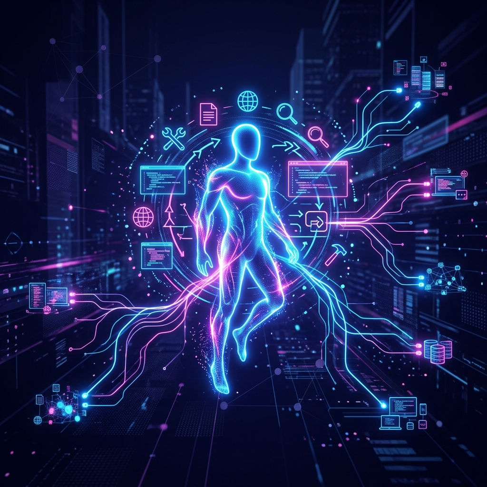
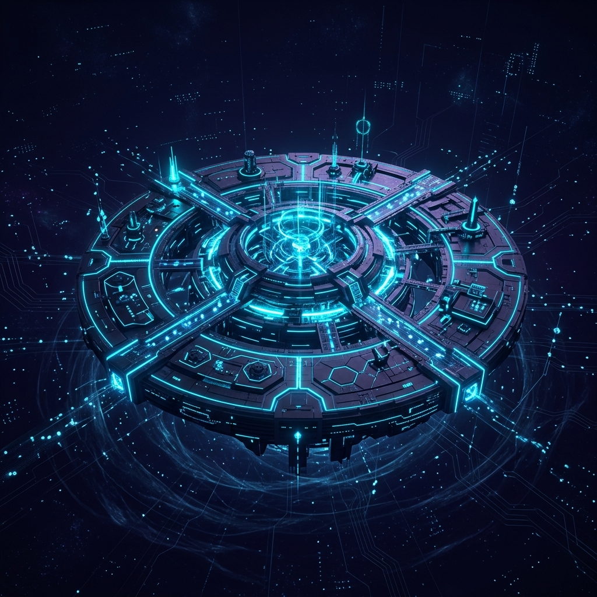
Antigravity 2.0 is a standalone AI agent platform designed to manage and orchestrate autonomous AI agents for coding, research, automation, and complex workflows.
Future Outlook: Moving from isolated AI assistance to a unified, self-managing workforce that scales developer productivity exponentially.
To create an agent-first environment where AI systems can:
“Humans define goals. Agents execute intelligently.”
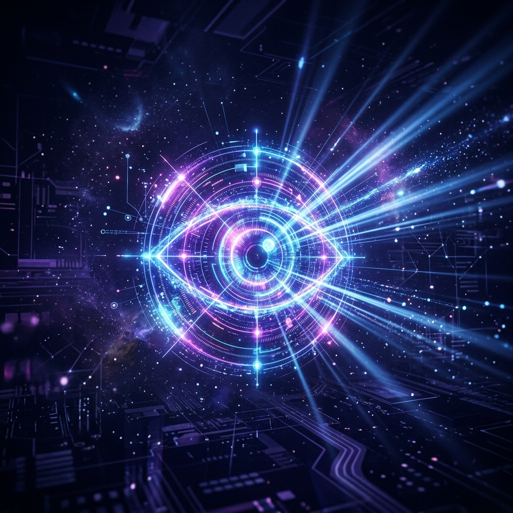
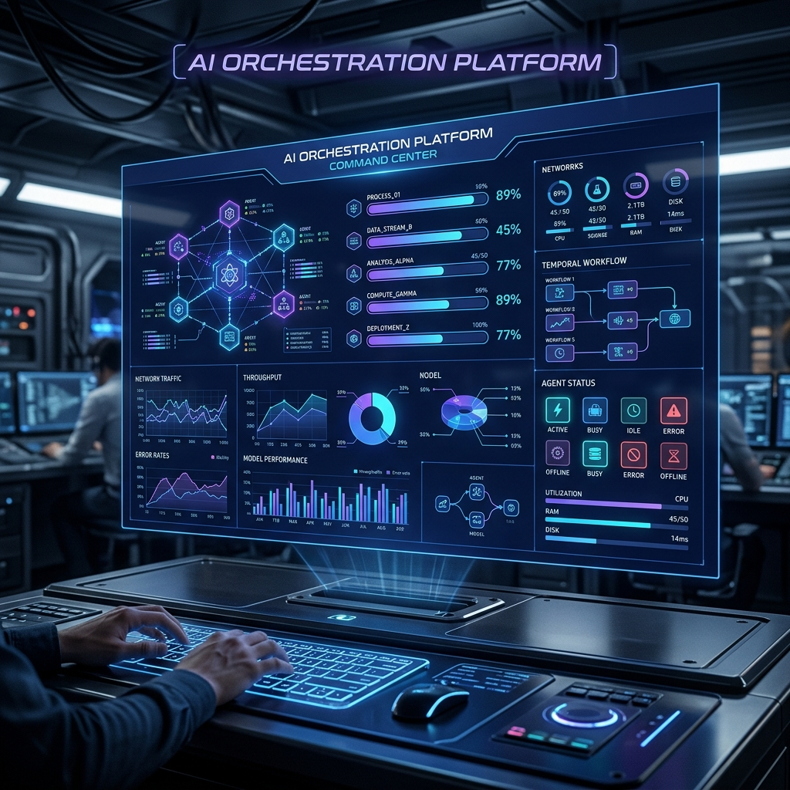
The Command Center is the main orchestration interface of Antigravity 2.0.
Why it matters: Centralized orchestration eliminates context switching. You can observe, debug, and direct multiple autonomous tasks from a single dashboard.
Antigravity 2.0 allows users to provide different types of contextual inputs to AI agents.
Rich Context: Providing agents with multi-modal inputs drastically reduces hallucination and aligns their output directly with the user's specific environment.
Users can interact with agents using natural speech.
Seamless Interaction: Voice unlocks hands-free guidance, allowing developers to verbally steer complex agentic workflows while continuing to code or review.
Artifacts are outputs generated by AI agents.
Tangible Outputs: Artifacts turn ephemeral chat messages into structured, version-controlled deliverables that the team can review and iterate upon.
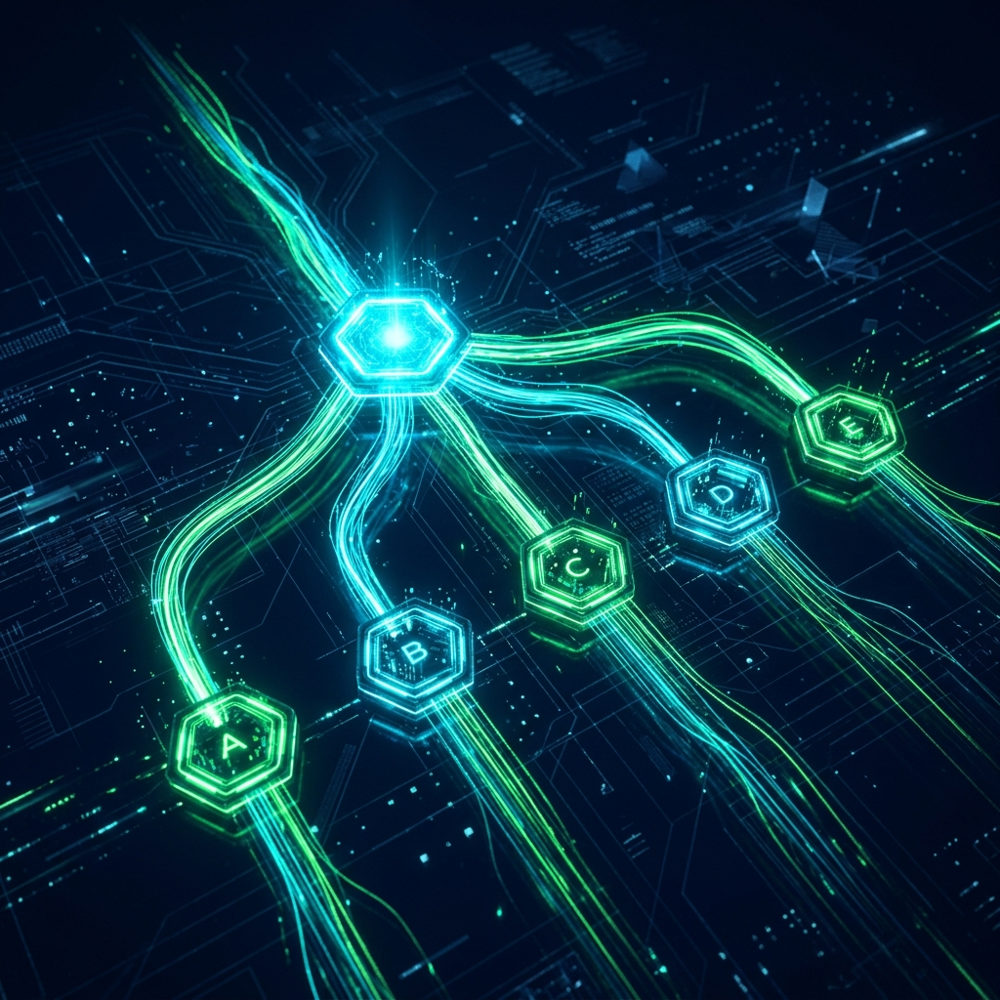
Subagents are smaller AI workers created dynamically for parallel execution.
Parallel Processing: By spawning specialized subagents (e.g., a researcher, a coder, a reviewer), complex problems are solved much faster through concurrent execution.
Parallel Processing: By spawning specialized subagents (e.g., a researcher, a coder, a reviewer), complex problems are solved much faster through concurrent execution.
Faster processing · Parallel problem solving · Better scalability · Improved task specialization
Agents can run automatically based on predefined schedules.
Continuous Operations: Automate mundane chores by scheduling agents to run system checks, compile reports, and synchronize data overnight.
Continuous Operations: Automate mundane chores by scheduling agents to run system checks, compile reports, and synchronize data overnight.
Daily reports · System checks · Automated testing · Data synchronization
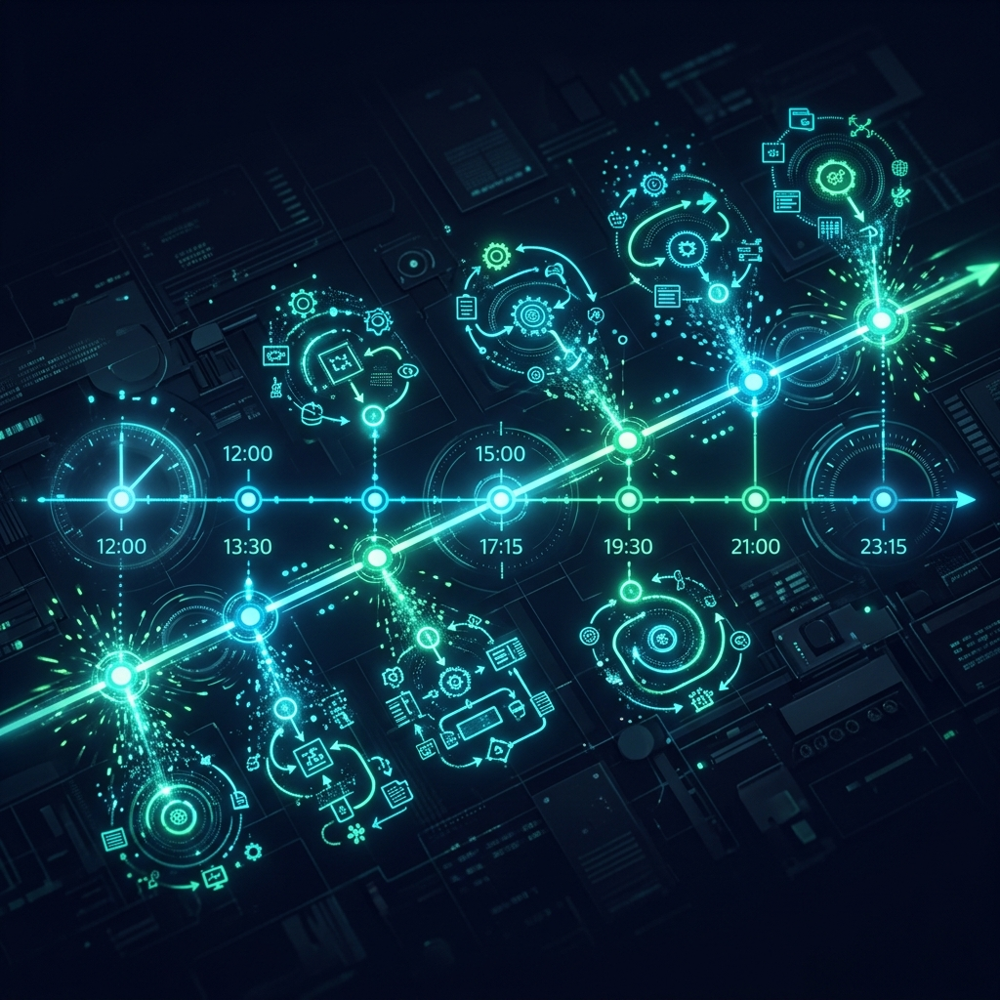
Rules define how agents should behave during execution.
Guardrails: Rules ensure that autonomous agents operate safely within boundaries, strictly adhering to enterprise security and coding standards.
Guardrails: Rules ensure that autonomous agents operate safely within boundaries, strictly adhering to enterprise security and coding standards.
Consistent outputs · Safer execution · Controlled automation · Team governance
MCP allows Antigravity to connect with external tools, APIs, and systems.
Standardized Tools: The Model Context Protocol (MCP) bridges the gap between the agent's brain and external APIs, databases, and local systems.
Standardized Tools: The Model Context Protocol (MCP) bridges the gap between the agent's brain and external APIs, databases, and local systems.
Weather APIs · Database systems · Internal enterprise tools · Browser automation tools
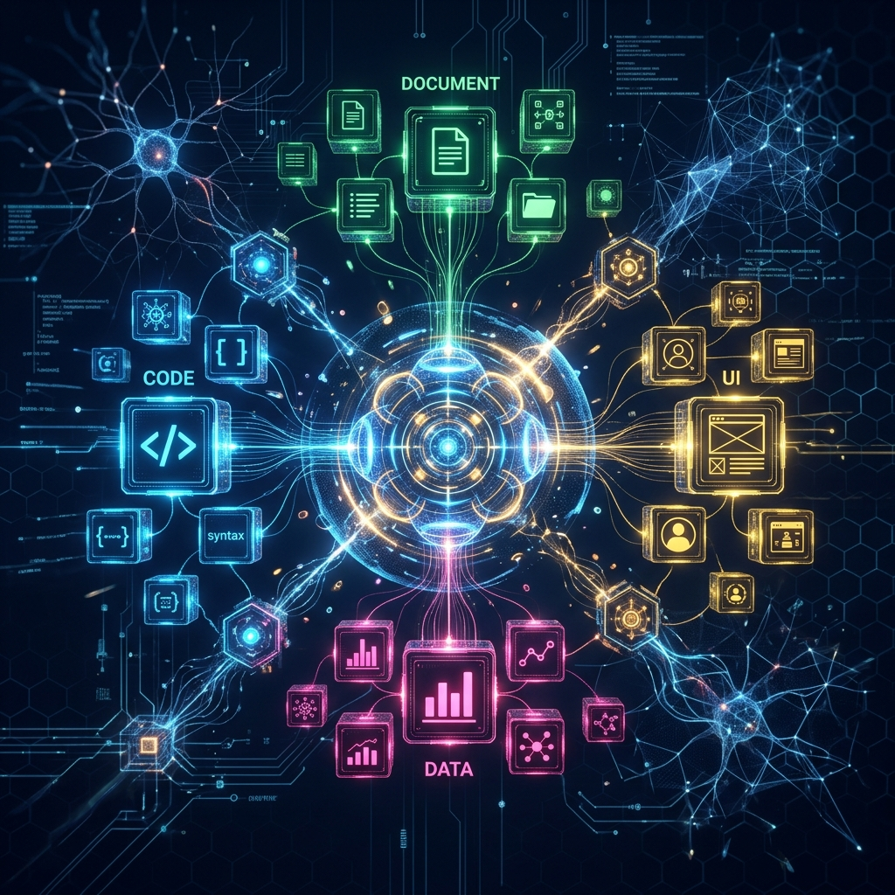
Skills are reusable AI capabilities that extend agent intelligence.
Extensibility: Skills act as plug-and-play knowledge blocks, equipping agents with the exact expertise needed for specific, niche tasks.
Extensibility: Skills act as plug-and-play knowledge blocks, equipping agents with the exact expertise needed for specific, niche tasks.
UI generation · Documentation writing · Backend automation · Data analysis
Tailored Automation: Teams can wrap their proprietary workflows and scripts into custom skills, effectively scaling their internal best practices.
Benefit: Turns Antigravity into a domain-specific AI platform.
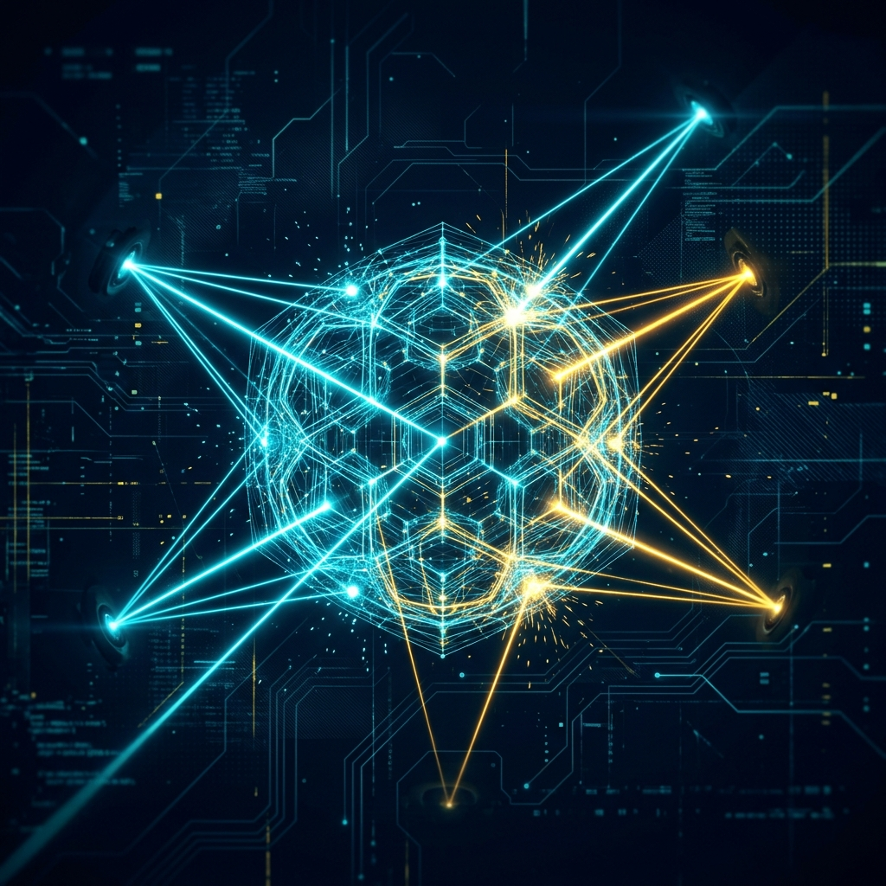
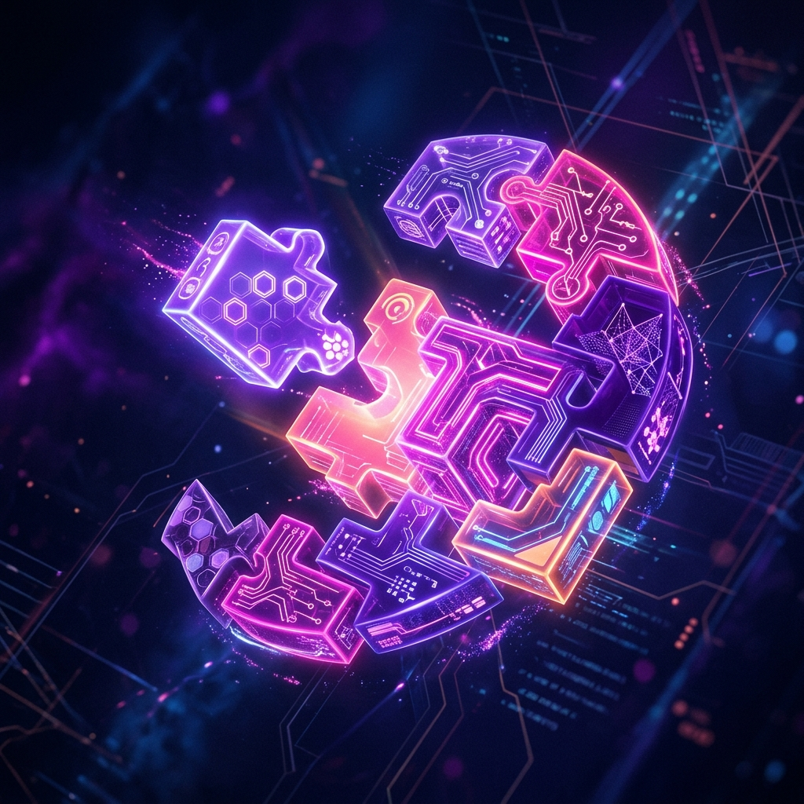
Modular extensions that add new capabilities and integrations to Antigravity 2.0.
Purpose: Plugins help agents access external tools, extend functionality, automate workflows, and integrate custom systems.
Browser automation · UI generation · API integrations · Deployments · Database ops
Reusable · Easy to customize · Faster setup · Scalable ecosystem
Importance: Makes Antigravity 2.0 highly extensible and adaptable for any workflow.
Antigravity supports structured workspace management.
Organization: Dedicated workspaces prevent cross-contamination of context, ensuring agents stay laser-focused on the relevant project.
Organization: Dedicated workspaces prevent cross-contamination of context, ensuring agents stay laser-focused on the relevant project.
Better collaboration · Cleaner workflows · Isolated environments · Easier management
| Antigravity IDE | Antigravity 2.0 |
|---|---|
| AI-assisted development | Autonomous AI orchestration |
| Single workflow execution | Parallel multi-agent execution |
| IDE-centered experience | Agent-centered ecosystem |
| Limited extensibility | Extensive MCP, Skills, Plugins |
| Assistant-style interaction | Autonomous execution environment |
| Developer productivity tool | Full AI operations platform |
The Shift: While the IDE empowers a single developer, Antigravity 2.0 acts as a manager coordinating an entire team of autonomous AI agents.
Use IDE when: Writing manually, small projects, traditional workflow.
Use 2.0 when: Managing agents, autonomous workflows, complex operations.
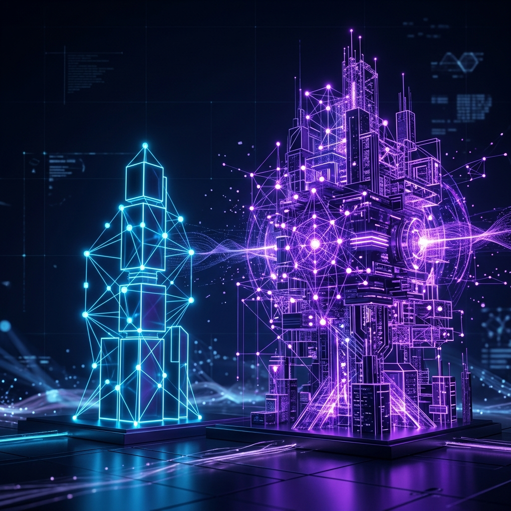
| Claude Code | Antigravity 2.0 |
|---|---|
| Primarily coding-focused | Multi-domain AI orchestration |
| Single assistant workflow | Multi-agent parallel workflows |
| Limited external orchestration | Strong MCP ecosystem |
| Mainly prompt-driven | Structured execution system |
| Focused on developer interaction | Focused on autonomous operations |
Differentiator: Antigravity goes beyond standard code generation, providing a structured orchestration layer for robust, multi-tool workflows.
Claude: Fast code assistance, interactive pairing.
Antigravity 2.0: Running AI teams, multi-tool automation, scalable systems.
| OpenCode | Antigravity 2.0 |
|---|---|
| Open-source coding env | Autonomous AI ops platform |
| Mostly developer-centric | Agent-centric architecture |
| Manual workflow dependency | Automated orchestration |
| Limited native agent mgmt | Advanced multi-agent system |
Enterprise Ready: Unlike purely open-source environments, Antigravity 2.0 brings built-in governance, structured orchestration, and parallel execution.
OpenCode: Custom open-source dev, lightweight environments.
Antigravity 2.0: Built-in orchestration, parallel workflows, enterprise ops.
| OpenClaw | Antigravity 2.0 |
|---|---|
| AI coding assistant framework | Complete autonomous platform |
| Mainly coding-oriented | Supports broader AI workflows |
| Community-driven custom | Structured enterprise orchestration |
| Limited orchestration | Advanced agent coordination |
Production Focus: Moving past research and prototypes, Antigravity delivers scalable, coordinated agent behavior for real-world production systems.
OpenClaw: Research experimentation, prototype systems.
Antigravity 2.0: Production operations, coordinated multi-agents, workflow scaling.
Takeaway: Antigravity 2.0 is not just a tool; it's a foundational platform for the next generation of autonomous AI operations.
Antigravity 2.0 is:
“Antigravity 2.0 represents the shift from AI assistance to AI execution.”
The command-line interface for interacting directly from the terminal.
Terminal Power: The CLI brings the full power of autonomous agents directly into the developer's natural environment for seamless scripting and automation.
Terminal Power: The CLI brings the full power of autonomous agents directly into the developer's natural environment for seamless scripting and automation.
Lightweight & efficient · Developer-friendly · Quick execution
Importance: Orchestrate systems without graphical interfaces.
The developer toolkit for building and integrating with Antigravity 2.0 programmatically.
Build on Antigravity: APIs, libraries, and utilities to create custom agents, plugins, and integrations.
Agent APIs · Plugin scaffolding · MCP connectors · Event hooks · TypeScript & Python libraries
Why it matters: Turns Antigravity from a platform you use into one you build on.